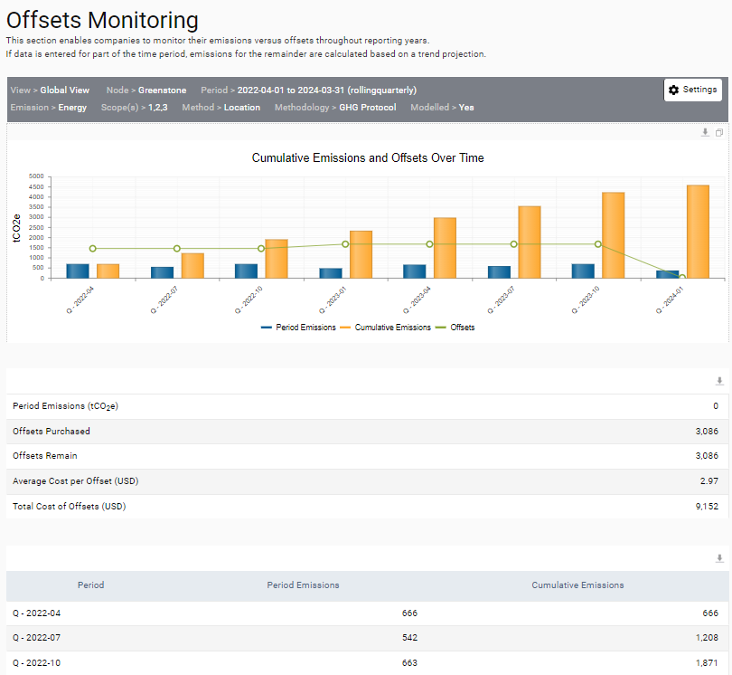

Once offsets have been added then these can be viewed on the dedicated Offsets dashboard that is under ‘Management > Offsets Monitoring’. This dashboard displays the cumulative emissions against the purchased offsets for the selected time period. The table below the bar graph has further details on the emissions, purchased offsets and costs. The table at the bottom is a summary of the emissions, offsets, and costs.
